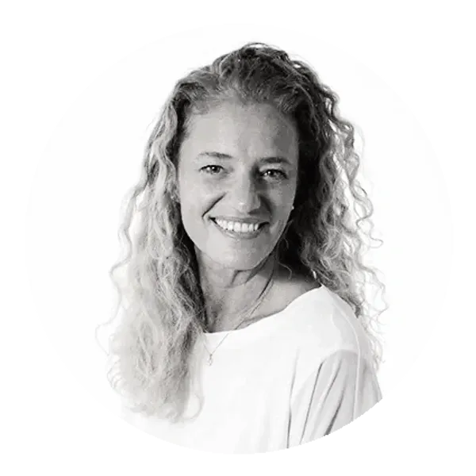

Sobre Danai
Nuestro propósito es ayudar a generar conciencia de identidad, en individuos y organizaciones, con el objetivo de evolucionar hacia un estado de plenitud.
En Danai sostenemos que todo cambio es impulsado por la autopercepción. Toda evolución personal genera evolución organizacional. Las organizaciones son conjuntos de personas que interactúan a través de redes conversacionales.
Creemos que el lenguaje, como acto generativo, es fuente de poder. La forma como actuamos en el lenguaje es crucial para evaluar cuán poderosos somos en la vida. Somos lo que comunicamos.
Nos apasiona acompañar a personas y empresas a definir y alcanzar su identidad y propósito, interviniendo y desafiando sus procesos conversacionales con el objetivo de facilitar el cambio.
Somos un grupo interdisciplinario de profesionales que trabajamos convocados en función de cada proyecto.
confianza - coherencia - pensar el bien
Origen de nuestro nombre
Danai, toma su nombre de Danaus, una especie de mariposa conocida como la mariposa monarca que se caracteriza por su resistencia y longevidad. Es la especie de mariposa que realiza el proceso migratorio más extenso.
La mariposa es sinónimo de transformación en muchas culturas. Representa la metamorfosis y las potencialidades del ser. Al mismo tiempo simboliza lo efímero que puede resultar la vida terrenal, que a final de cuentas está destinada a la trascendencia.
Fundadora
María Laura Menna, fundadora de Danai, es curiosa, inquieta y apasionada.
Profesionalmente es Licenciada en Comercialización, posee una maestría en Dirección de Empresas y una maestría en Negocios Tecnológicos. Es fotógrafa y coach ontológico.
En su vida personal y profesional el cambio ha sido una constante.
Durante más de 25 años ha formado parte de transformaciones de empresas, de equipos y de personas. Ha trabajado en organizaciones internacionales, en empresas nacionales y también en forma independiente, conociendo los diferentes desafíos que enfrenta cada tipo de trabajo.
Cada proyecto, cada experiencia y cada conversación la han enriquecido profundamente, y lo siguen haciendo. El aprendizaje y la transformación se han convertido en la esencia y el motor de su vida.
Danai nace del compromiso y deseo genuino de continuar ese viaje de transformación, a través de un espacio abierto al diálogo y la escucha para generar nuevos mundos de posibilidades.